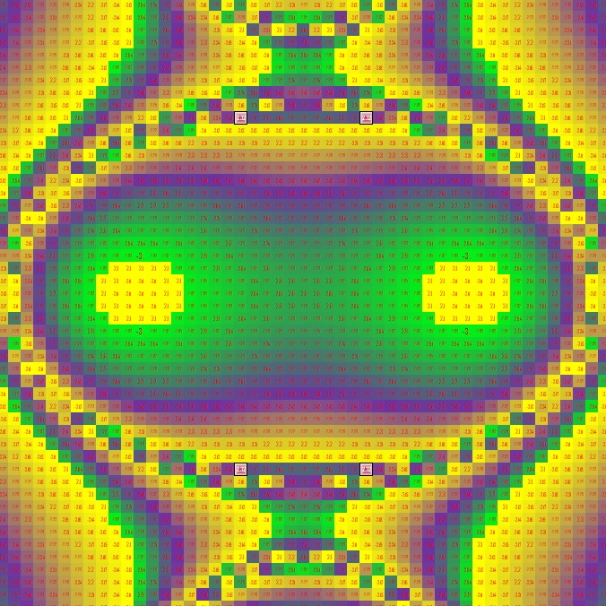

Приставка "Со-" в Слове "сотворение" указывает на то, что в этом Действии ("Берешит", с которого начинается Тора, Книга Зоар, Библия, ...) Творец, Свят Благословен Он, хоть и будучи Единоличной реальной Высшей Силой, совершающей этого действие во всем, что "вещественно и объективно" совершается в Реальном Мире чем или кем либо вообще посредством Его совершения Творцом, Свят Благословен Он, "первоначально" (то есть в Реальности, в Которой нет "миллионов Световых лет пустой Вселенной, тысяч километров Земной поверхности, миллиардов людей на планете Земля, тысяч лет исторbи человеческой цивилизации, десятков лет человеческой жизни, и так далее, а есть только одно единственное действие, кроме Которого нет ничего, что можно было бы добавить к тому что просто "Есть", в котором нет времени или пространства, равно как и множественности деятелей, действий или задействуемых ими явлений, образующих "вереницу изменения свойств" "колеса времени этого мира", точнее говоря, "любого воспринимаемого Мира", поскольку именно восприятие человека "запускает в движение" эту Колесницу, а Мир посредством этого является не более (и не менее) чем тем, чем его непрерывно согласованно "намеревают" посредством взаимообусловленного процесса коллективной групповой "настройки восприятия" "взрослые современные люди", которые одновременно воспринимают его примерно одинаковым образом, независимо от обстоятельств, могущих быть связанными "с ними лично").
Указывает на то, что, не смотря на все вышеперечисленное и не перечисленное, но подразумеваемое кем либо, Творец, Свят Благословен Он, Реально выполняющий это действие "Вначале", т.е. еще до того, как человек создается и начинает жить в этом созданном Творцом, Свят Благословен Он, Мире, становящимся для него Действительностью (Асия), внешне-независимой от его собственных желаний, чаще всего им испытываемых "конфронтологично" тому, что является результатом чувственного восприятия "объективной реальности" в части оказываемого влияния на него лично, "здесь и сейчас".
Выполняет Его не Один и не Сам по Себе, хотя больше с Ним Его выполнять, по всем мыслимым и немыслимым, но реальным от этого в не меньшей мере и степени, "понятиям", "Законам", "обстоятельствам" Своего происхождения, Которое, напомню, происходит в Супер-реальности Абсолюта, где все времена, формы материи, сознания, действия, явления и т.д., еще не стали тем, чем они выглядят для человека, воспринимающего и "наблюдающего" за ними посредством органов чувств и разума "этого Мира". Поскольку это именно действие "со-творения", а не "просто творения", в котором был бы создан тот, кого вознамерился создать Создатель, "без учета", как говорится, в виду собственной малости и мимолетности, "особого мнения" создаваемого субъекта (что вполне соответствует порядку и норме логических конструкций, с которыми хорошо и близко освоен наш разум и интеллект - ведь как можно при создании "творения", не важно, какого именно и каким образом, действительно руководствоваться "особым мнением" того, кто не то, что еще не обладает каким либо личным мнением, но и кого еще вообще нет в реальном Мире, поскольку он только должен быть, посредством этого Действия своего Создателя, буквально "создан из ничего"?).
В действительности этот вопрос, могущий казаться софистическим, ошибочным или наигранным (нереальным, надуманным и объективно малозначимым), является одним из фундаментальных парадоксов человеческого бытия и сознания, наподобие широко известного "быть или не быть", с которым человеку и человечеству предстоит "лично встретиться" в уже не столь отдаленном будущем, когда мечты о создании "искусственного интеллекта" перестанут быть "чистой воды" фантазией и фантастикой, и станут частью "будничной" реальности повседневного человеческого Мира "здесь и сейчас", примерно также, как ею за какие-то два десятилетия стал компьютер и Интернет. По моим ощущениям, разрешить этот "парадокс" практически окажется легко, а вот объяснить его онтологически и теоретически, полноценно и "строго по Научному" может быть значительно сложнее и занять гораздо больше времени, как самого человека, так и (включая) того, Кто и Кого этим самым действием своего Творца, Свят Благословен Он, то есть, человека Этого Мира "объективной реальной действительности", в процессе и посредством постановки, осознания и практического и онтологического разрешения данного Парадокса (не случайно, как оказывается, слова "порядок", "подарок" и "парадокс" формально синонимичны, как минимум, в русском языке) человечеством, будет создан, сформирован, испытан и задействован в достижении конкретных практических задач своего "создания из ничего" (в просторечии "создание из ничего" отражается фразеологизмом "на коленке") человеком, являющимся для него "старшей духовной сущностью", реальность которой непостижима для разума, но гораздо более реальна, чем сам разум как явление и онтологическое средство самососуществования человека и человечества в "этом" реальном "мире".
Человеком, для которого будущая Реальность совершения Им данного действия, или данной сферы деятельности и публичного, равно как и лично-частного интереса, деятельности и направленности жизненных стремлений, целей, намерений, идеалов, посредством важности и приоритетности перед многими другими, наполняющими и составляющими коллективное семантическое поле "тоналя времени", условно называемое "магами и воинами" выражением "здесь и сейчас", сферами интересов и практической деятельности человека разумного в третьем тысячелетии, символизирующем окончание становления Человека с большой буквы, то есть многочисленного в количестве "себе подобных" на Планете Земля, "Царем над Природой" этого Мира, то есть, иначе говоря, создания, формирования и "взрослого" становления и осознания самого себя Творцом, Свят Благословен Он, выполняющим работу Творца, Свят Благословен Он, чтобы раскрыть этим своего Творца, Свят Благословен Он, и выполнить Его Волю, соединив со своей собственной свободной волей по желанию сердца и твердому решению разума и воли, также проходящих непростой и нелегкий процесс соединения и самососуществования в человеке и человечестве, осуществляемый посредством конфронтологической взаимообусловленности своего одновременного самовоспроисхождения с человеком, получающим опыт жизни этого мира посредством, осознанного разумом, чувственного восприятия, осуществляемого посредством воли, опосредованной конкретным намеренным действием "здесь и сейчас" выполняемым полностью "от обратного".
В этом особом месте Бущущего "этого мира" произойдет (и уже начинает происходить), вынужденное соединение двух представлявшихся человеку на протяжении всего долгого Пути собственного Начала эволюционного формирования и развития, абсолютно не связанными сущностно, и даже отрицающими друг друга, областями Знания, "базисными экзистенциально-онтологическими модусами", являющихся двумя "полюсами" человеческого бытия и эволюционно последовательного развития - мира разума, или научной рациональной просвещенности, и мира воли, или "магической"/"духовной" пробужденности и осознанности. Поскольку и то и другое окажется нерасчленимо задействованы в реальности совершаемого единого действия и взаимной деятельности, становящейся, по мере своего осуществления, выяснения, формирования и становления "взрослой" сферой жизненных интересов все большего числа людей, и опосредуя жизненно важные обстоятельства и механизмы остальной части, не вникающей лично и непосредственно в то, "из чего состоит и как и кем производится" то, посредством чего они "просто живут, как все" на Земле, пользуясь "благами цивилизации" современного им Мира и общества.
Соединение, опосредованное тем фактом, все больше и больше проявляющим себя и тем и другим, как "благодаря", так и "строго против", их собственным представлениям, намерениям, и, кажущимся незыблемыми и неизменными, насущным интересам, стремлениям и потребностям, которые имеются у них наследственным образом, как у представителей течений и направлений, исторически широко задействованных и принимающих непосредственное участия, являясь неотъемлемой частью, единого процесса эволюционного развития человека и человечества, длящегося на протяжении многих веков, и впереди уходящего за горизонт "будущности" любой меры "просматриваемой отдаленности от настоящего". Поскольку и одни и вторые будут нуждаться в друг друге конкретно и практически, каждый со своей стороны видя и осознавая "объективно независимо" от своих собственных "особых мнений" на этот счет, объективное значение взаимного участия в этом процессе, важным для каждого со своей стороны, но важного равным "жизненным", несократимым образом, для каждого и каждой из них...